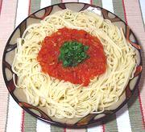

|
Tomato & Onion Sauce for PastaItaly Naples - Filetto di Pomodoro | ||||
| Makes: Effort: Sched: DoAhead: |
6 cups ** 1 hr Yes |
This light, tasty and very popular tomato sauce from Naples is considered a "Summer Sunday" sauce in Italy. It is also an ingredient in many other sauce recipes. | |||
|
|
2 28 1-1/4 2 4 3/4 2 1/3 1/4 ------ |
oz # oz lrg T T t t --- |
can Whole Tomatoes Onions, white Prosciutto fat (1) Basil leaves Butter Olive Oil ExtV Salt Pepper -- Garnish Parsley |
Texture of this sauce depends on how fine you chop the onions and how long you fry them. Prep - (25 min)
|